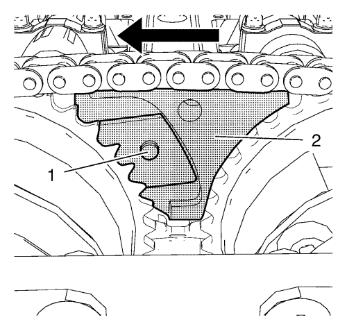
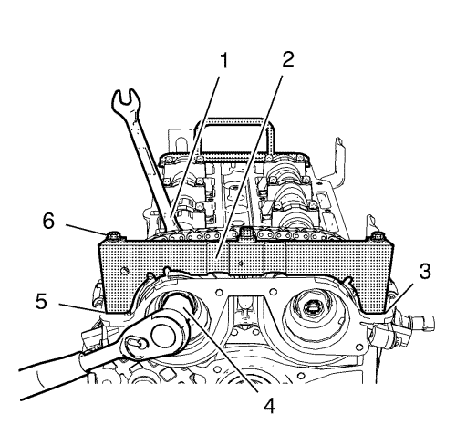
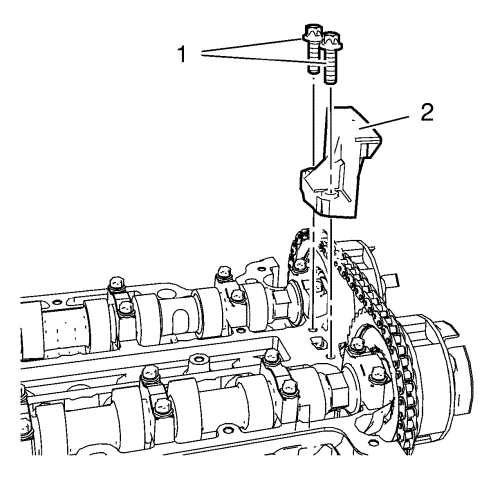

Montaje de la tapa delantera del motor y de la bomba de aceite
Herramientas especiales
| • | EN-952 Pasador de fijación |
| • | EN-953-A Herramienta de fijación |
| • | EN-49977-100 Fijación del disco transmisor |
| • | EN-49977-200 Herramienta de fijación |
Si desea informarse sobre herramientas regionales equivalentes, consultar Herramientas especiales .

Nota: Tenga cuidado con los casquillos guías cuando monte la cubierta delantera del motor.
- Monte la tapa delantera del motor (3).
- Monte los 13 tornillos M6 (1) de la cubierta delantera del motor.
- Monte los 2 tornillos M10 (2) de la cubierta delantera del motor.
Precaución:Consulte Precaución con las fijaciones en la sección Prólogo.
- Apriete los 13 tornillos M6 de la cubierta delantera del motor a 8 N·m (71 lib. pulg.).
- Apriete los 2 tornillos M10 de la cubierta delantera del motor a 35 N·m (26 lib. pie).
Fijación del piñón del árbol de levas

Nota: Empuje la herramienta de fijación en la dirección de la flecha para asegurarse de su completo acoplamiento.
- Monte la herramienta de fijación EN-49977-200 (2) y asegúrese de que el engranaje de la herramienta de fijación se acople en el engranaje del piñón del árbol de levas de admisión (1).

- Apriete los 2 tornillos de fijación (1) de la herramienta de fijación EN-49977-200 mientras empuja dicha herramienta en la dirección de la flecha.
- Apriete el tornillo del aparato de ajuste (2).

Nota: Es posible montarlo en una posición incorrecta. Asegúrese de que la herramienta de sujeción está montada por completo en la culata, en las zonas (3) y (5).
- Monte la herramienta de retención del disco transmisor EN-49977-100 (2) para encontrar y sujetar la posición correcta de las ruedas del excitador de posición del árbol de levas.
- Apriete los pernos de fijación (6) de la herramienta de retención del disco transmisor EN-49977-100.
Precaución:Consulte Precaución con las fijaciones en la sección Prólogo.
Precaución:Consulte Precaución de la fijación del par angular y estiramiento en la sección Prólogo.
- Apriete el NUEVO perno del piñón del árbol de levas de admisión (4) mientras sujeta el hexágono (1) del árbol de levas de admisión a 50 N·m (37 lib. pie).
- Apriete el perno del piñón del árbol de levas de admisión (4), mientras sujeta el hexágono (1) del árbol de levas de admisión a otros 60°.
- Apriete el NUEVO perno del piñón del árbol de levas de escape mientras sujeta el hexágono del árbol de levas de escape a 50 N·m (37 lib. pie).
- Apriete el perno del piñón del árbol de levas de escape, mientras sujeta el hexágono del árbol de levas de escape a otros 60°.
- Desmonte la herramienta de retención del disco transmisor EN-49977-100 y la herramienta de fijación EN-49977-200.
Montaje de la guía de cadena de distribución superior

- Monte la guía superior de la cadena de distribución (2).
- Monte los 2 tornillos de guía superiores de la cadena de distribución (1) y apriételos a 8 N·m (71 lib. pulg.).
- Desmonte la herramienta de fijación EN-953-A y el pasador de fijación EN-952.
- Monte el tapón del orificio de la placa de sujeción del cojinete del cigüeñal y el anillo de junta y apriételo a 40 N·m (30 lib. pie).
| © Copyright Chevrolet. All rights reserved |